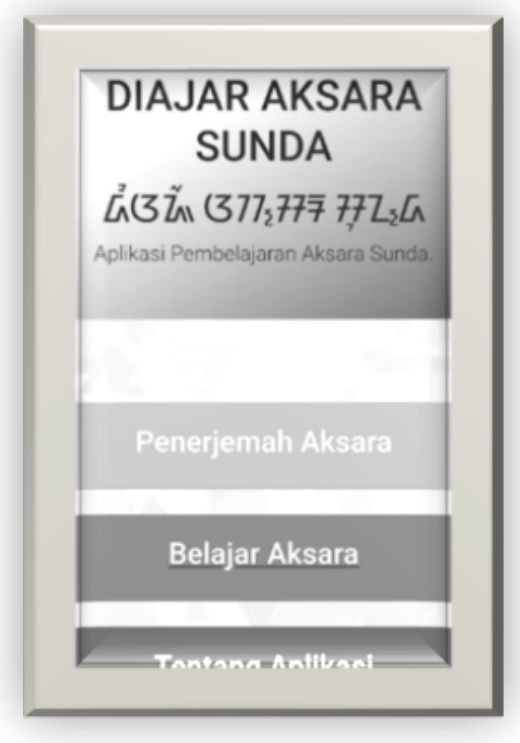

Aplikasi Pemanfaatan DFA/NFA
Finite Automata
Finite Automata adalah mesin automata dari suatu Bahasa regular. Finite Automata memiliki jumlah state yang banyaknya berhingga dan dapat berpindah-pindah dari suate state ke state yang lainnya. Finite Automata dibagi menjadi Deterministic Finite Automata (DFA) dan Non Deterministic Finite Automata (NFA).
Aplikasi Pemanfaatan DFA/NFA

Contoh Finite State Automata Pada Aplikasi Pembelajaran Aksara Sunda
1. Use Case Diagram
Gambar di atas menunjukkan use case diagram aplikasi translator aksara sunda. Pada use case diagram tersebut terdapat satu aktor yaitu pengguna yang dapat mengakses keseluruhan use case.
2. Flowchart
Dalam implementasi automata, semua masukan dari bahasa untuk penerjemahan menjadi aksara sunda pertama system akan mengenal terlebih dahulu huruf vocal (v) dan konsonan yang akan digunakan, hal ini dilakukan untuk pemenggalan suku kata tersebut. Pemenggalan ini dilakukan menggunakan diagram transisi Finite State Automata. Pemenggalan digunakan untuk memisahkan suku kata yang dibentuk.
3. Mesin Automata pada Penerjemahan Kalimat
Pada mesin ini pertama ada masukan untuk mengenal kata apa yang akan dimasukan kemudian dilakukan state menangkap kalimat tersebut dan diterjemahkan dengan melakukan aksi dari input yang sudah diterjemahkan tadi ada output hasil dari terjemahan.
4. Proses Aplikasi
Aksara latin terdiri dari huruf, angka, spasi dan tanda baca. Angka, spasi dan tanda baca dapat ditranslate ke aksara sunda secara langsung. sedangkan untuk huruf harus melihatpola suku katanya terlebih dahulu karena proses translate ke aksara sunda berdasarkan pola suku kata. Tanda baca hanya tanda baca titik dan koma yang dapat ditranslate ke aksara sunda. Setiap kata dibatasi dengan 4 susunan konsonan berurutan karena tidak ada kata yang terdiri dari lebih 4 konsonan berurutan.
5. Halaman Menu Utama
Halaman menu utama merupakan halaman yang muncul setelah halaman splash screen dieksekusi. Pada halaman ini terdapat lima fitur menu yakni menu translate, aksara sunda, sandangan, tentang, dan keluar.
6. Halaman Penerjemah Aksara
Halaman menu translate ini termasuk salah satu fitur yang terdapat pada aplikasi ini. Aplikasi ini mampu mentranslate dari huruf latin ke aksara sunda. Cara menggunakan fitur translate ini pengguna pada saat di halaman utama memilih fitur translate kemudian memasukan huruf atau kata yang akan ditranslate pada form yang di sediakan kemudian klik tombol translate yang tersedia, hasil translate akan di tampilkan di form hasil translate.
7. Halaman Belajar Aksara Sunda
Halaman belajar aksara sunda merupakan halaman yang digunakan untuk mempelajari aksara sunda.Antara lain aksara swara, aksara ngalagena, rarangkén, angka dan tanda baca